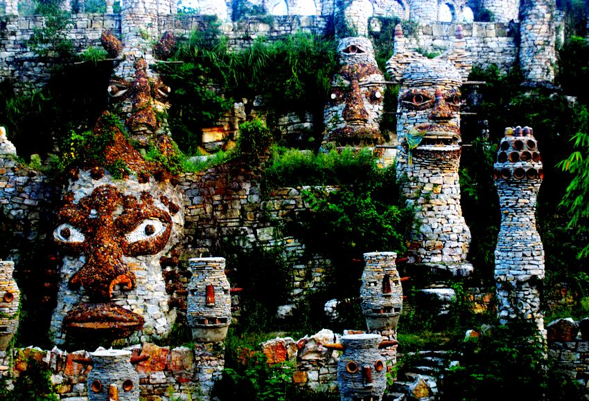
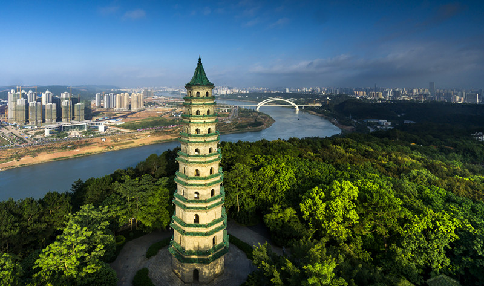

走进夜狼谷
-

夜狼谷简介 夜郎谷位于贵州省最东部的万山特区与湖南省最西部的新晃侗族自治县接壤的风景区内，地处云贵高原苗岭山脉东延末端、雪峰山脉以西、武陵山脉以南的结合部。这里气侯温和，雨量充沛，景色迷人。景区属喀斯特地貌，由于元古界上震旦系亿万年的地壳运动，地貌受地质构造制约，风化剥蚀和流水切割强烈，山体常悬陡崖，状如砖层，奇形异状，三步有景，百步藏险，蔚为奇观。
-

夜狼文化 据《汉书》 、《华阳国志》、 《水经注》记载，夜郎的主体先民是濮人、僚人，后发展为仡佬人。“仡佬”一词自南宋首次出现后一直沿用至今。夜郎文化是指夜郎政治、经济范围内所有民族文化的组合，也是指受夜郎文化势力影响的周边地区文化的组合，包括古夜郎文化，也涵盖了夜郎风影响的当代民族文化。古夜郎强盛时期，其疆城达到昆明以东、广西中西部、湖南芷江等地。
-

南宁历史 原居地为今贵州西部、北部、云南东北及四川南部部分地区。秦及汉初，夜郎已进入定居的农业社会。地多雨潦、少牲畜、无蚕桑，与巴、蜀、楚、南越均有经济联系。蜀地的枸酱等土产，常经夜郎运到南越。西汉初，竹王多同兴起于遯水（今贵州北盘江），自立为侯。建元六年（前135），武帝遣唐蒙入夜郎，招抚多同，并于元光四至五年（前131～前130）在其地置数县，属犍为南部都尉。